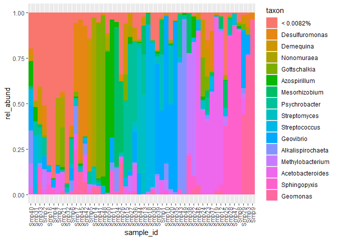

Your Package Name


Bubbler is a tidy approach to amplicon sequencing visualization. Bubbler makes relative abundance tables from amplicon-sequencing (16S/18S rRNA) datasets. Bubbler combines asv counts, taxonomic information, and optionally, metadata to create stacked barcharts, or bubble plots. Bubbler can import from dada2, qiime2, phyloseq and Bracken output. Relative abundance tables can be modified, with various methods implemented in bubbler.
Installation
You can install bubbler from GitHub with:
if (!requireNamespace("devtools", quietly = TRUE)){
install.packages("devtools")
}
devtools::install_github("zjardyn/bubbler")bubbler
bubbler has three main steps:
- Import data into a relative abundance table.
- Modify the
rel_abundtable. - Make a
ggplot2object, with stacked-bar or bubble plot aesthetics.
Here, using tidyverse notation, I import data from a phyloseq object, modify the table, and plot it.
library(bubbler)
rel_abund_phy(physeq, taxa_level = "Genus") %>% # 1. import data into rel_abund.
pool_taxa(n_taxa = 16) %>% # 2. modify rel_abund pool to 16 most abundant taxa
arrange_taxa() %>% # arrange plotting variables by most abundant taxa.
arrange_sample_by_taxa() %>% # arrange samples by most abundant taxa
bar_plot(position = "fill") # 3. plot
The bubbler documentation has examples for importing data, constructing rel_abund tables, and other aspects of the package.